3.1 Inleiding
Landschappelijk onderzoek heeft tot doel om het landschap en de bodem te onderzoeken in functie van de mogelijke aanwezigheid van archeologische resten. Je gaat dus (nog) niet op zoek naar die archeologie zelf, maar je gaat onderzoeken waar in het landschap zich archeologische resten kunnen bevinden. Je bekijkt dit zowel doorheen het landschap (horizontaal) als in de diepte (verticaal).
Voor steentijdarcheologie stellen zich doorgaans drie onderzoeksvragen:
Zijn er niveaus aanwezig waarin steentijdsites (niet) kunnen bewaard zijn? Zijn er sedimenten aanwezig die vroeger werden afgezet dan een mogelijke steentijdoccupatie? Zijn daarin stabiele niveaus aanwezig die een loopvlak kunnen hebben gevormd? Worden die stabiele niveaus gemarkeerd door een natuurlijke bodem of niet? Zijn er organische sedimenten aanwezig? Zijn er culturele lagen aanwezig? …
Wat is de bewaringstoestand van die niveaus? Zijn de relevante niveaus afgedekt of liggen ze aan de huidige oppervlakte? Zijn ze goed bewaard of verstoord? Wat is de oorzaak en aard van die verstoring (erosie, landbouwbewerking, vergraving, …)? In welke mate zijn ze verstoord? Wat kan de impact hiervan zijn op de bewaring van eventuele steentijdsites?
Hoe zag het landschap eruit tijdens de steentijd? In welke mate komt het onderzoeksgebied overeen met preferentiële sitelocaties in het kader van de ‘verwachting’ (zie 2.3)? Hoe was de topografie in de steentijd? Hoe was de waterhuishouding? Hoe evolueerde dit doorheen de tijd? …
Landschappelijk onderzoek is belangrijk om de wenselijkheid van verder onderzoek naar steentijdarcheologie te bepalen. Prospectie naar steentijdsites is immers alleen zinvol als bovenstaande vragen positief kunnen beantwoord worden (zie 2.3.2). Landschappelijk onderzoek gaat daarom steeds vooraf aan prospectie.
Bovendien kan je met landschappelijk bodemonderzoek bepalen waar je best prospecteert. Het toont waar binnen het onderzoeksgebied de relevante niveaus al dan niet aanwezig zijn, waar die niveaus wel of niet goed bewaard zijn, en in zekere mate hoe het paleolandschap eruit zag. Met die gegevens kan je zones voor prospectie afbakenen. Daarnaast geeft het aan op welke diepte de niveaus liggen die sites kunnen bevatten. Landschappelijk bodemonderzoek is dus essentieel voor het bepalen van een optimale prospectiestrategie.
Het landschappelijk onderzoek begint natuurlijk al tijdens het bureauonderzoek. Kaarten, luchtfoto’s en andere bronnen maken vaak al goede inschattingen mogelijk (zie 2). Deze dienen echter altijd op het terrein getoetst te worden. Is de verwachte bodemopbouw aanwezig? Wat is de precieze bewaring ervan? Is een afgedekte bodem aanwezig? Hoe verloopt de topografie daarvan? …
Met landschappelijk bodemonderzoek probeer je die vragen zo goed mogelijk te beantwoorden met observaties op het terrein. Meestal moet je daarvoor een blik in de bodem werpen, door middel van boringen, profielputten, geofysisch onderzoek en/of sonderingen. Het bureauonderzoek is echter van groot belang om de onderzoeksvragen voor het landschappelijk bodemonderzoek scherp te stellen, en om de beste methodiek ervoor te bepalen. Het terreinonderzoek wordt daarom steeds grondig voorbereid door bureauonderzoek.
Voor het beantwoorden van de derde onderzoeksvraag (hoe zag het landschap eruit tijdens de steentijd) is het vaak nodig om het landschap te bekijken op een voldoende grote schaal. Je wil immers weten welke plaats het onderzoeksgebied tijdens de steentijd innam in het ruimere landschap. Daarvoor kan het wenselijk zijn om ook buiten het onderzoeksgebied terreinwaarnemingen te doen. In de huidige praktijk is het vaak niet mogelijk om bijvoorbeeld te boren buiten een onderzoeksgebied, maar kan je eventueel wel slootkanten, boomvallen en andere opportuniteiten benutten om tot een beter begrip van het landschap te komen. In elk geval zet je best maximaal in op het bureauonderzoek om het ruimere landschap zo goed mogelijk te begrijpen, onder andere door landschappelijke terreingegevens van onderzoeken in de omgeving te raadplegen, en integreer je de resultaten van jouw landschappelijk bodemonderzoek hierin.
Er is veel variatie mogelijk in landschappelijk bodemonderzoek. De onderzoeksvragen kunnen van het ene project tot het andere sterk verschillen, van een eenvoudige check van de bodembewaring tot uitgebreide geomorfologische studies en reconstructies van het paleolandschap. De lokale landschappelijke en bodemkundige situatie kan bovendien sterk variëren. Dit leidt tot verschillende inhoudelijke en praktische noden waaraan je de methodiek en onderzoeksstrategie steeds moet aanpassen.
Landschappelijk bodemonderzoek in functie van archeologie vereist een specifieke expertise. In feite maakt het deel uit van de onderzoeksdiscipline van de aardwetenschappen, maar de onderzoeksvragen zijn sterk gericht op een archeologische problematiek. Je hebt dus enige achtergrond in beide disciplines nodig.
Indien de context eenvoudig is kan een landschappelijk bodemonderzoek worden uitgevoerd door ofwel een archeoloog met voldoende ervaring in de lokale geomorfologie en pedologie, ofwel een aardkundige met voldoende ervaring in de archeologische context en vraagstelling, ofwel een samenwerking tussen een archeoloog en aardkundige.
Het onderzoek van complexe contexten vereist echter vaak een sterke expertise in bepaalde deeldisciplines zoals pedologie, paleoecologie, dateringstechnieken, … Hiervoor organiseer je best een intensieve samenwerking tussen archeologen en aardkundigen.
Eenvoudige contexten kunnen op het terrein soms complexer blijken dan verwacht. Aarzel dan niet om de hulp van experten in te roepen. Ook hierbij is het belangrijk om de relevante deeldiscipline(s) van de aardwetenschappen aan te spreken, zoals een quartairgeoloog of fysisch geograaf om de opbouw van het landschap te onderzoeken, een bodemkundige om de genese en bewaring van bodems te begrijpen, enz.
De handleiding bodemkunde1 biedt in groot detail de praktische en technische richtlijnen over het uitvoeren van boringen, observeren van de bodem, beschrijven van profielen, enz. Daarom beperken we ons hier tot de algemene principes en de relatie tot steentijdgerichte onderzoeksvragen.
In de CGP wordt een onderscheid gemaakt tussen controleboringen en landschappelijk bodemonderzoek. Controleboringen dienen alleen om de dikte van de bouwvoor te bepalen en/of de diepte te bepalen tot waar de bodem zal verstoord worden. Je gebruikt ze om snel en eenvoudig de bureaustudie aan te vullen, maar ze kunnen geen volwaardig landschappelijk bodemonderzoek vervangen.
3.2 Technieken
3.2.1 Landschappelijk booronderzoek
Boren is meestal de eenvoudigste, goedkoopste, snelste en minst verstorende techniek om een blik in de bodem te werpen. Door deze voordelen is het in de huidige preventieve archeologie veruit de meest gebruikte techniek voor landschappelijk bodemonderzoek.
Boren heeft echter ook beperkingen: je bekijkt er maar een smalle sectie van de bodem mee, en deze sectie wordt vaak in zekere mate verstoord. Daardoor zijn steeds niet alle relevante aspecten van de bodem voldoende zichtbaar in de boor. In dat geval vervang je booronderzoek best door landschappelijke profielputten, of combineer je beide technieken. Op de relatie tussen booronderzoek en profielputten gaan we dieper in bij de bespreking van landschappelijke profielputten (zie 3.2.2).
Er zijn veel verschillende boortypes, met elk hun voor- en nadelen (fig. 3.1). Je kiest voor elk project het meest geschikte type op basis van de:
- effectiviteit: zullen relevante aspecten van de bodem voldoende waarneembaar zijn? Dit hangt af van de:
(verwachte) aard van de ondergrond;
specifieke onderzoeksvragen van het project.
- praktische toepasbaarheid:
kan je ermee tot op de relevante niveaus boren?
kan je ermee door de (verwachte) sedimenten boren?
geraak je ermee op het betreffende terrein?
inspanning/ergonomische belasting
- kost: geld, tijd, personeel, expertise.
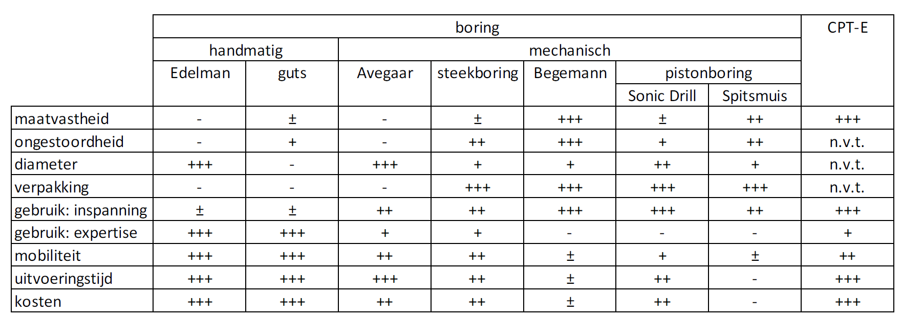
Handmatige boortechnieken hebben het voordeel dat ze eenvoudig te gebruiken zijn en relatief goedkoop binnen het kader van een landschappelijk onderzoek (fig. 3.2). Ze vragen bovendien weinig logistiek. Daarom worden handmatige boortechnieken in de huidige praktijk bijna steeds verkozen boven mechanische boortechnieken, zolang de omstandigheden dit toelaten.
Handmatig boren gebeurt doorgaans in een open boorput, dus zonder buitenbuis die voorkomt dat de boorput inkalft of dichtslibt. De boorkop of guts is bovendien steeds gedeeltelijk open, waardoor zeer losse of waterverzadigde sedimenten eruit kunnen glijden. Handmatige boren tot onder de watertafel is daarom vaak niet mogelijk. Er zijn zeker uitzonderingen (o.a. waterverzadigde zandlagen overbruggen met de pulsboor, gutsboringen in stevige klei of veen), maar in veel diepe en natte contexten kan je alleen mechanische boortechnieken gebruiken met buitenbuis en monstername in liners (plastic monsterbussen).
Erg diep boren is bovendien arbeidsintensief en ergonomisch belastend. Zeker bij projecten met grote aantallen diepe boringen kunnen mechanische boortechnieken een interessant alternatief bieden.
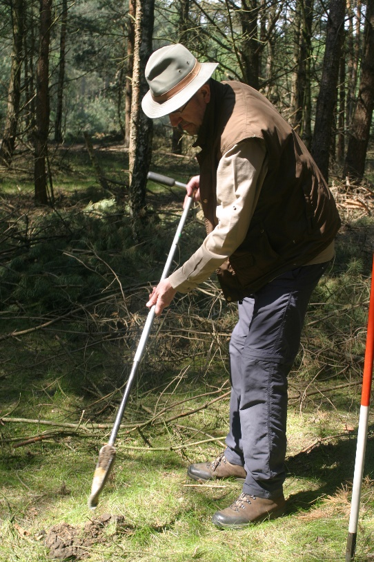
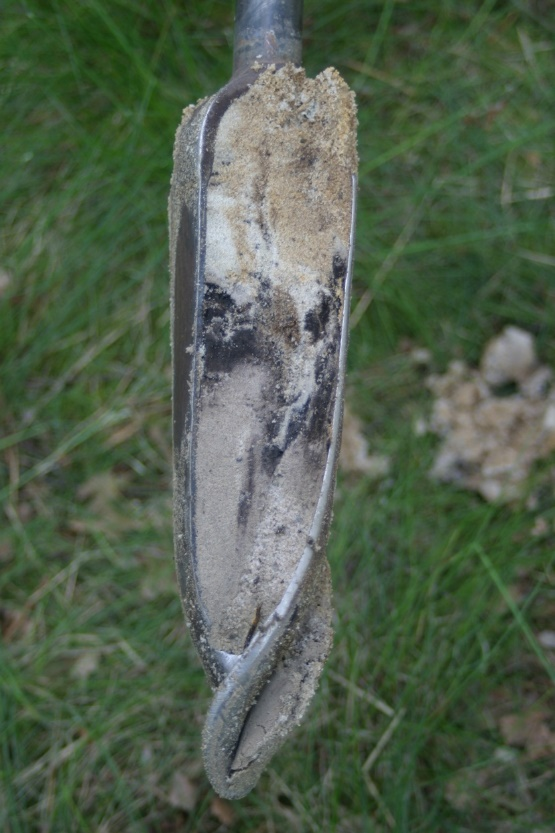
De Edelmanboor of schroefboor is het meest gebruikte handmatige boortype. Hiermee kan je relatief snel en goedkoop boringen met een relatief grote diameter uitvoeren3. Het detailniveau van je waarnemingen is echter beperkt. Het monster wordt immers verstoord door de draaibeweging van de boorkop, en je bemonstert de bodem boorkop per boorkop (fig. 3.3). Maar voor eenvoudige projecten in goed gekende contexten volstaat dit meestal.
De gutsboor laat gedetailleerdere waarnemingen toe. Het bodemmonster wordt nauwelijks verstoord en kan in langere continue eenheden worden genomen (meestal ongeveer 1 m)(fig. 3.4). De guts in de bodem drijven vraagt vaak een grotere inspanning, waardoor de meeste sedimenten ons beperken tot kleinere boordiameters4. Gutsboringen zijn meestal ook tijdsintensiever dan Edelmanboringen en daardoor duurder. Alleen bij zachtere sedimenten zoals natte klei en veen werken gutsboringen vaak sneller en vlotter dan Edelmanboringen en zijn ook grotere diameters mogelijk.
Gutsen worden daarom best ingezet in dergelijke sedimenten, of wanneer meer gedetailleerde waarneming is vereist dan mogelijk bij Edelmanboringen, bijvoorbeeld wanneer je dunne of moeilijk zichtbare bodemhorizonten wil detecteren of een duidelijk beeld wenst van de begrenzing tussen verschillende niveaus.
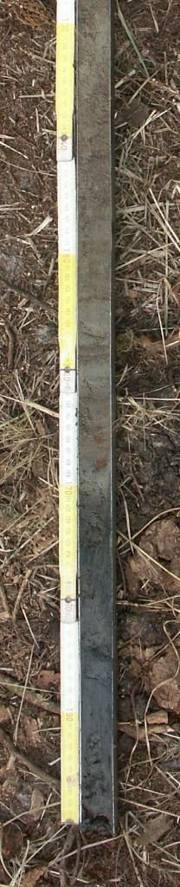
Een frequent probleem bij het boren met de hand is het overbruggen van met water verzadigde zandige sedimenten. Als deze aan de oppervlakte liggen, zoals op het strand of in een intergetijdengebied van een rivier, kan een pulsboor in combinatie met een metalen verbuizing van het boorgat soelaas brengen.
Met dit systeem maak je eerst een ondiep boorgat met een Edelmanboor, waarin je de eerste metalen buis van de verbuizing recht zet. Vervolgens vul je deze buis met water, zet je er de pulsboor in, en vul je de pulsboor door de pulsboorkop op en neer te bewegen. Deze is onderaan voorzien van een klep die bij opwaartse druk van het water open gaat en zo het zand dat in suspensie is door het pulsen binnen laat. Bij valt bij afwezigheid van opwaartse druk valt de klep neer en belet zo dat het zand de pulsboorkop weer verlaat. Na een aantal pulsbewegingen haal je de pulsboor uit het verbuisde boorgat en giet je de inhoud uit (een mengsel van zand en water). Door dit te herhalen zakt de buis van de verbuizing geleidelijk, onder invloed van het gewicht van de persoon die bij het pulsen op het metalen platform staat dat aan de bovenkant van de buis bevestigd is. De verbuizing voorkomt dat het boorgat dicht slibt.
Deze handelingen herhaal je tot er bij het pulsen geen zand meer in de pulsboorkop belandt en de buizen dus ook niet meer zakken. Dit betekent dat je kleiige, venige of lemige sedimenten hebt bereikt waardoor het pulsen niet meer werkt. De buizen hebben onderaan een scherpe kant zodat ze zich lichtjes in de onderliggende sedimenten vastzetten en dus geen water meer binnen laten uit de watervoerende overbrugde zandige laag. Vanaf nu kan je in het verbuisde boorgat verder boren met een Edelmanboor guts.
De techniek vereist relatief veel materiaal en een behoorlijke hoeveelheid water (al snel een 5-tal emmers) (fig. 3.5 en fig. 3.6). Je voorziet daarom best 3 personen. Met enige oefening kan je zo ongeveer één boring (6 tot 8 m diepte en met 1 tot 4 m verbuizing) per uur uitvoeren, inclusief beschrijving en verplaatsing naar het volgende boorpunt.
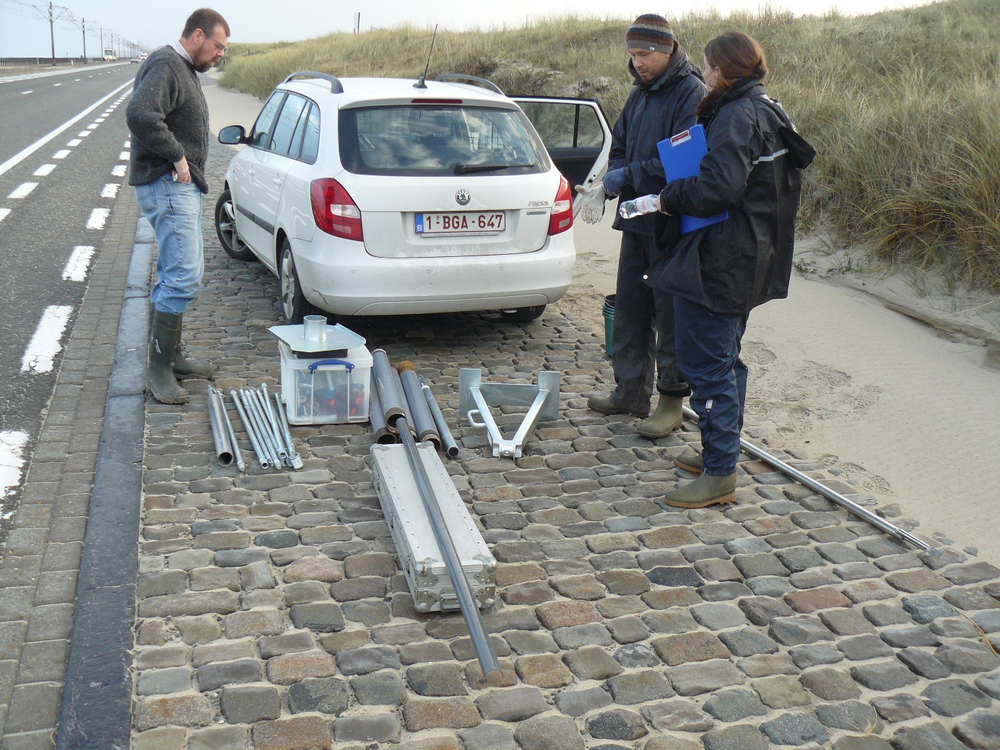
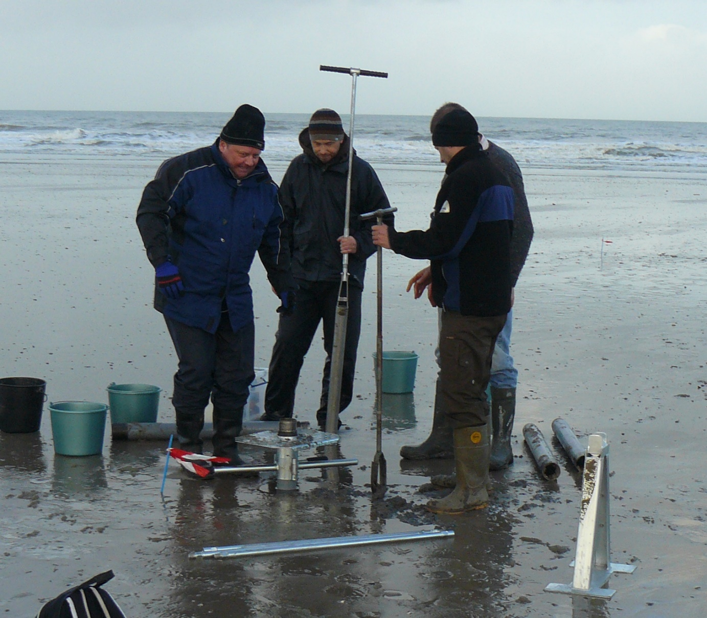
Mechanische boortechnieken zijn doorgaans (veel) duurder dan handmatige technieken. Het uitvoeren van mechanische boringen is onderhavig aan de VLAREL-wetgeving, met vereisten voor opleidingen en erkenningen5. Tenzij je zelf aan deze vereisten kan voldoen, moet je hiervoor dus een erkend boorbedrijf inschakelen. De boormachines vragen bovendien een grotere logistieke inspanning. Ook zijn ze niet steeds inzetbaar op moeilijk toegankelijke terreinen.
Daar staat tegenover dat je met verbuisde technieken met liners (zoals steekboringen, Begemannboringen of pistonboringen) zeer diepe boringen kan uitvoeren, tot ver onder de watertafel (fig. 3.7). Voor het onderzoek van aardkundige eenheden in deze positie zijn dit dus de enige boortechnieken die je kan inzetten. Bij projecten met een groot aantal boringen op grote diepte kunnen ze door hun snelheid bovendien economisch voordeliger zijn dan handmatige boringen.
Ook is de kwaliteit van de monstername (veel) hoger dan bij handmatige boringen. De monsters zijn nagenoeg onverstoord6, kunnen in lange continue secties worden gerecupereerd (doorgaans 1 m of meer), en kunnen in de liners lange tijd worden bewaard (fig. 3.8). Bovendien bieden ze grotere diameters dan handmatige gutsboren (5 cm voor steekboringen; 6,6 cm bij Begemannboringen; 5 tot 10 cm voor pistonboringen). Dit laat niet alleen gedetailleerde waarneming van de bodem toe, maar biedt ook meer mogelijkheden voor monstername voor natuurwetenschappelijk onderzoek en datering.
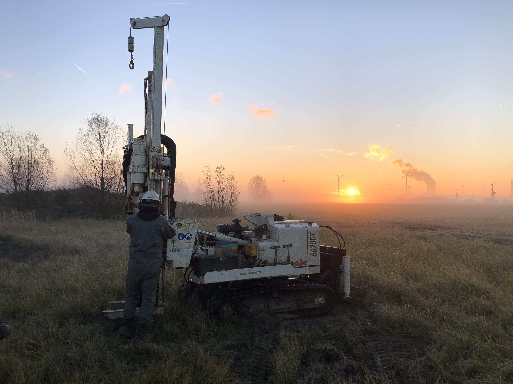
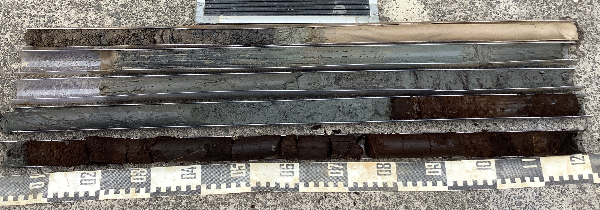
Avegaarboringen wijken af van andere mechanische boortechnieken en sluiten qua inzetbaarheid en mogelijkheden eerder aan bij handmatige boortypes. De boorput is niet verbuisd en de monsters worden niet in liners genomen waardoor je er beperkt mee onder de watertafel kan werken. De Archimedesschroef verstoort de monsters zoals bij Edelmanboringen, maar de bodemprofielen kunnen wel in langere continue eenheden worden bekeken en relatief grote diameters zijn mogelijk (15 cm wordt vaak gebruikt) (fig. 3.9 en fig. 3.10).
Avegaarboringen zijn goedkoper dan andere mechanische technieken en ergonomisch minder belastend dan handmatige boringen. Daarom kunnen ze vooral bij grotere projecten en relatief diepe boringen (maar boven de watertafel) een interessant alternatief vormen voor Edelmanboringen.
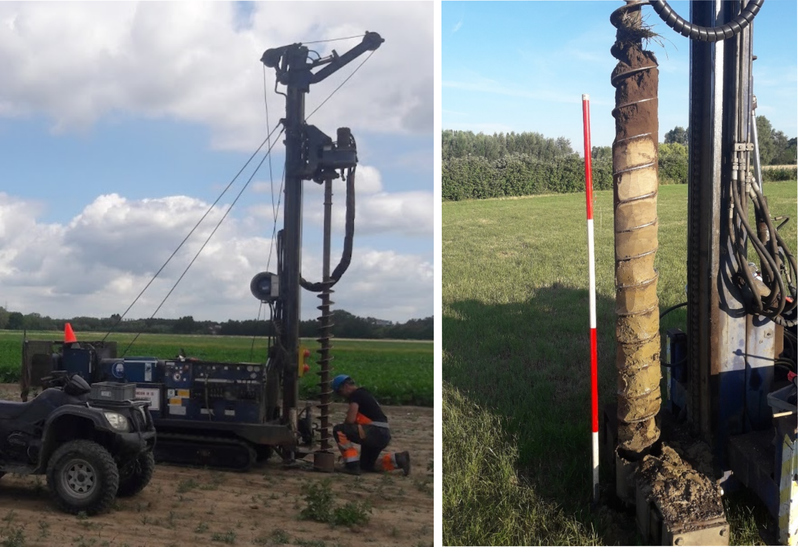
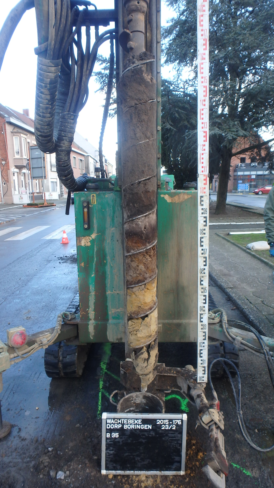
3.2.2 Landschappelijke profielputten
Landschappelijke profielputten graaf je om profielwanden te bekomen die de lokale bodemopbouw tonen. Deze onderzoeken registreer je als referentieprofielen.
Landschappelijke profielputten zijn doorgaans duurder dan boringen en vragen een grotere logistieke inspanning. Ook mechanische boortechnieken zijn goedkoper dan profielputten, want de diepere en/of waterverzadigde contexten waarin je deze aanwendt vereisen erg grote profielputten, grondwaterbemaling en eventueel damwanden.
Bovendien veroorzaakt de aanleg van profielputten een veel grotere verstoring van de bodem dan boringen. Bij kleine profielputten hoeft dit geen belangrijke factor te zijn, maar grotere putten en sleuven kunnen nefast zijn voor de eventueel aanwezige archeologie, en soms voor het huidige of geplande landgebruik.
Daar staat tegenover dat profielputten veel effectiever zijn dan boringen voor landschappelijk bodemonderzoek.
Profielwanden bieden immers een veel duidelijkere blik op de ondergrond, want ze zijn veel breder dan boorkernen. Dat maakt de interpretatie van veel elementen in de bodem eenvoudiger. Sommige zaken zijn eerder vaag en daardoor moeilijk zichtbaar in boringen, bijvoorbeeld laatglaciale paleobodems. In profielwanden zijn dergelijke zaken veel makkelijker herkenbaar omdat ook het horizontale verloop zichtbaar is. In profielputten kan je het onderscheid tussen een lokaal fenomeen (een ‘vlek’) en iets wat over grotere oppervlakte doorloopt (een ‘band’: een laag of bodemhorizont) veel gemakkelijker maken dan bij boringen (fig. 3.11). Je kan landschappelijke profielputten bovendien zo breed of lang maken als nodig om het verloop van bepaalde niveaus te onderzoeken, bijvoorbeeld in de vorm van sleuven (fig. 3.12 en fig. 3.13).
Daarnaast zijn de profielwanden van putten onverstoord, in tegenstelling tot Edelman- en avegaarboringen. Ook dat biedt meer zekerheid bij de interpretatie. Je kan bijvoorbeeld dunne of vage elementen gemakkelijker herkennen, de overgang tussen twee niveaus beter waarnemen, of de bewaringstoestand van aardkundige eenheden duidelijker vaststellen.
Ten slotte bieden landschappelijke profielputten meer mogelijkheden voor natuurwetenschappelijk onderzoek zoals micromorfologie, OSL-datering, … Je kan er immers onverstoorde monsters in nemen, en in veel grotere volumes dan bij boringen mogelijk is. Bovendien kan je die monsters doorgaans veel beter in hun context observeren en plaatsen. Dit kan vooral voor het onderzoek van complexe contexten belangrijk zijn (fig. 3.14).
Voor relatief eenvoudige en goed gekende contexten kan landschappelijk booronderzoek vaak volstaan. Bij complexere of onbekende contexten biedt de studie van profielwanden in landschappelijke profielputten echter veel meer mogelijkheden voor een goede interpretatie, of is het zelfs de enige manier om de lokale geomorfologie en pedologie te begrijpen.
De bodemopbouw kan tijdens een landschappelijk booronderzoek complexer blijken dan verwacht, of bepaalde aspecten van de bodem kunnen gewoon moeilijk te interpreteren zijn. Dan vul je het booronderzoek best aan met één of enkele profielputten.
Als een complexe bodemopbouw wordt verwacht, zet je best meteen landschappelijke profielputten in. Pas nadat je daarmee een goed inzicht in de bodemopbouw hebt bekomen, kan je het verdere verloop daarvan eventueel met boringen verder karteren.
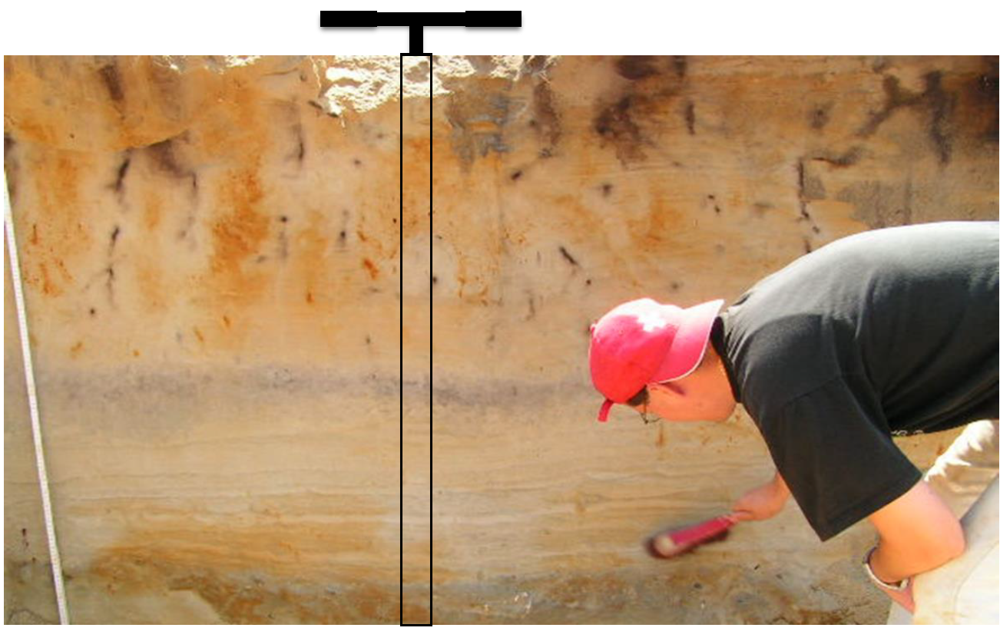
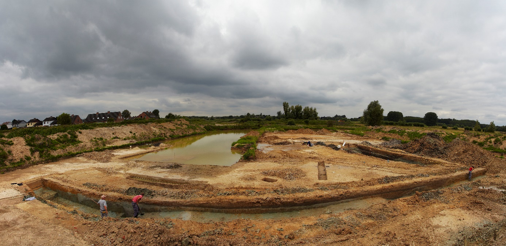
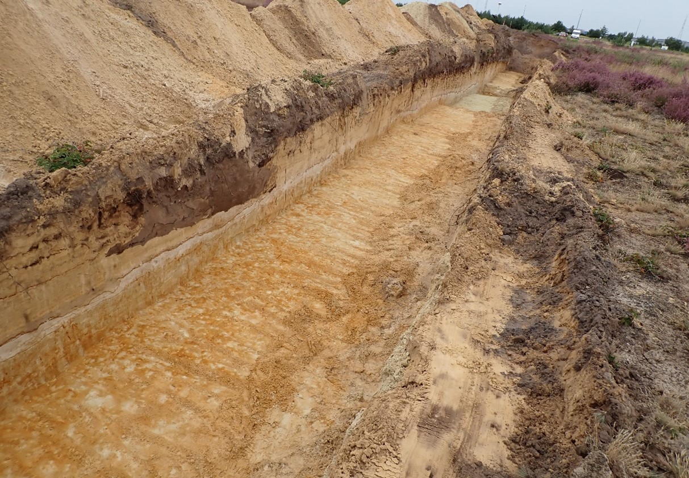
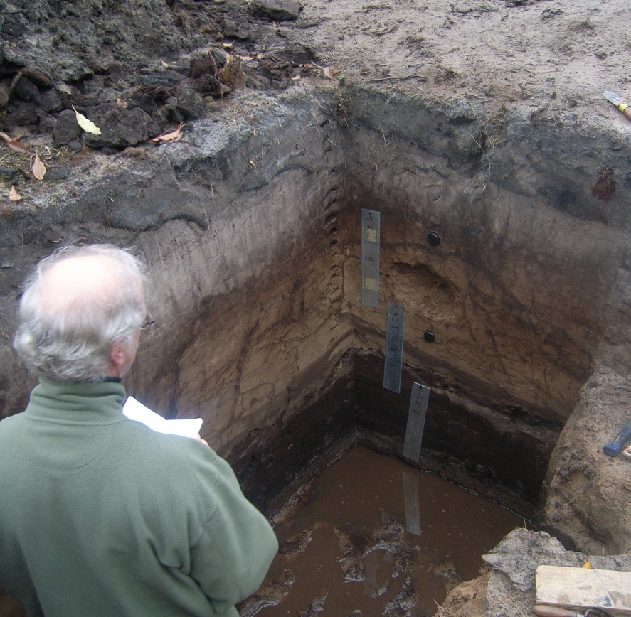
Landschappelijke profielputten kunnen veel verschillende vormen en maten aannemen. Je kan ze handmatig met de schop graven of met een graafmachine. Je kiest deze parameters van elke put op basis van de:
diepte van de relevante aardkundige eenheden;
onderzoeksvragen (verloop, laterale variatie, …);
verstoringsgraad;
stabiliteit en veiligheid;
kost.
Putten, sleuven of profielwanden zijn soms al aanwezig op, langs of in de omgeving van een onderzoeksterrein in de vorm van grachten, groeves of andere uitgravingen. Je kan deze heel eenvoudig tot landschappelijke profielput omvormen door (een deel van) hun wanden op te schonen (fig. 3.15). Gebruik maken van dergelijke opportuniteiten is een kostenefficiënte manier om aanvullende gegevens te bekomen, bijvoorbeeld om een landschappelijk booronderzoek te staven.
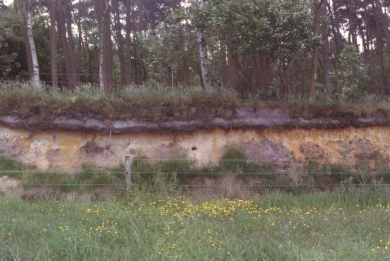
3.2.3 Sonderingen (CPT)
Sonderingen of cone penetration tests (CPT) kunnen aanvullend werken op mechanische boringen maar leunen eerder aan bij geofysische technieken. CPT’s nemen geen fysiek staal maar meten mechanische eigenschappen van de bodem. De puntweerstand en de plaatselijke wrijvingsweerstand van de bodem worden door elektrische druksensoren gemeten terwijl een conus met gelijkmatige snelheid in de bodem wordt gedrukt (CPT-E). Die data kan omgezet worden naar soil behavior types, klassen met dezelfde mechanische bodemeigenschappen. Deze klassen kunnen mits validatie door directe sedimentobservaties grofweg aan bodemtextuurklassen worden gerelateerd. Ze laten geen nauwkeurige voorspelling van fysische bodemeigenschappen toe, maar bieden wel een relatief overzichtsbeeld van de bodemopbouw, in het bijzonder in alluviale en estuariene contexten.
De mechanische sensoren kunnen worden aangevuld met of vervangen door andere sensoren. Zo kunnen ook geofysische sensoren (elektrische weerstandsmeters, conductiviteitsmeters, magnetometers, seismometers, …) in de bodem worden geduwd en eventueel geïnterpreteerd door vergelijking met geofysische metingen aan de oppervlakte. Daarnaast kan ook een camera zijwaarts de bodem filmen terwijl hij erin wordt gedrukt (videoCPT, vis-CPT of OIP). De grootte van deze beelden is beperkt (ca. 1 x 1 cm) maar ze kunnen een waardevolle visuele hulp bieden voor de interpretatie van CPT-E meetgegevens in alluviale en estuariene sedimenten (fig. 3.16 en fig. 3.17). De eerste tests met deze camerabeelden wijzen ook op mogelijke toepassingen in kartering van paleobodems in de zand- en leemstreek.
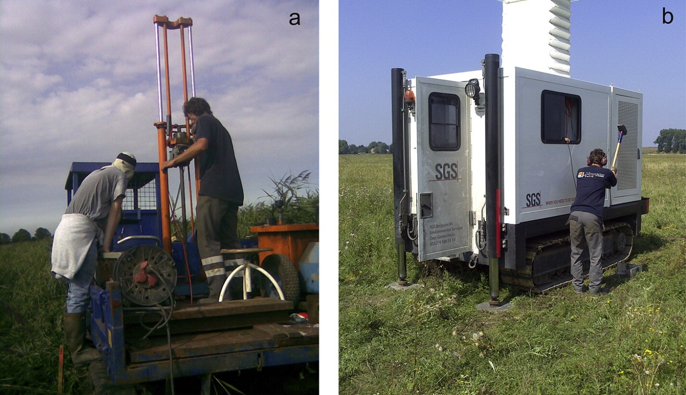
Sonderingen kunnen een kostenefficiënte aanvulling op boringen zijn voor paleolandschappelijke kartering in diepere alluviale, estuariene of mariene contexten. Ze kunnen sneller en goedkoper geplaatst worden dan (verbuisde) mechanische boortechnieken of diepe profielputten, en je kan ze tot diep onder de watertafel inzetten. In dergelijke contexten kunnen ze een landschappelijk boor- of profielputtenonderzoek aanvullen.
De interpretatie van de meetdata is echter niet steeds eenvoudig en vereist geologische voorkennis van het onderzoeksgebied of directe sedimentobservaties bij een deel van de sonderingen. Dit moet steeds door een ervaren expert gebeuren en vereist altijd vergelijking met gegevens uit lokale boringen of profielputten, in het bijzonder voor dunnere niveaus. Zonder geologische voorkennis plaats je daarom best voor een landschappelijk bodemonderzoek met sonderingen eerst een aantal boringen en/of profielputten om de lokale bodemopbouw te begrijpen. Vervolgens kan je beoordelen of sonderingen bruikbaar kunnen zijn om de ruimtelijke variabiliteit/verloop van die bodemopbouw op de rest van het terrein te karteren.
Sonderingen worden vaak in geotechnische voorstudies gebruikt om bijvoorbeeld funderingen te ontwerpen. Daardoor is heel wat bestaande data beschikbaar via de Databank Ondergrond Vlaanderen, of voor specifieke projectgebieden bij de bouwheer.
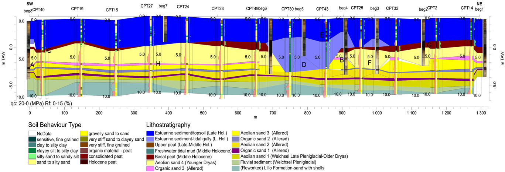
3.2.4 Geofysische technieken
Zeker bij complexe en afgedekte landschappen, zoals bijvoorbeeld alluviale gebieden, kan je ook geofysisch onderzoek gebruiken in combinatie met landschappelijke boringen en profielputten en -sleuven, om een meer vlakdekkende kartering te maken van de ondergrond. Zeker bij grote ontwikkelingsprojecten kan dit kostenefficiënter zijn dan het plaatsen van een groot aantal boringen. De landschappelijke boringen en profielputten worden dan dikwijls mede geplaatst om de resultaten van het geofysisch onderzoek te verifiëren. Een dikwijls hiervoor gehanteerde methode is electromagnetische inductie (EMI), zoals toegepast toegepast o.a. in de Moervaartdepressie10, en bij de kartering van het afgedekte dekzandlandschap in de Scheldepolders11.
Ook andere geofysische prospectiemethodes, zoals bijvoorbeeld Ground Penetrating Radar (GPR) kunnen van nut zijn voor het in kaart brengen van (paleo)landschappelijke aspecten, zoals bijvoorbeeld paleobodems12, maar dit werd tot op heden nog niet toegepast in de Vlaamse archeologie.
3.3 Strategie
3.3.1 Plaatsing
Landschappelijke boringen en profielputten plaats je steeds op een manier die toelaat om de complexiteit van het (vroegere) landschap en de bodem te begrijpen. Je bepaalt het vereiste aantal boringen en/of putten, hun tussenafstand, het patroon, en eventuele hun exacte positie dus in de eerste plaats op basis van de landschappelijke verwachting uit het bureauonderzoek, gecombineerd me de observatie van het landschap op het terrein.
Een regelmatig grid dekt de oppervlakte van een onderzoeksterrein gelijkmatig. Het is bij landschappelijk booronderzoek een goede standaard aanpak om onderzoeksgebieden met een eerder lage complexiteit te onderzoeken, alsook terreinen met een weinig specifieke landschappelijke verwachting (fig. 3.18). Ook voor complexere onderzoeksgebieden kan een grid goede resultaten leveren, maar je hanteert daarvoor best een hogere resolutie (fig. 3.19). Ook bij kleine of smalle onderzoeksgebieden plaats je boringen best niet te ver uit elkaar.
In de huidige praktijk worden verschillende patronen gebruikt voor landschappelijke boringen (vierkants- en driehoeksgrid), en ook de afstanden tussen de boringen variëren. Grids van 20 bij 20 m, 30 bij 40 m en 40 bij 50 m worden courant gebruikt. Kies dit voor elk project op basis van de verwachte landschappelijke complexiteit en de grootte van het onderzoeksgebied, en motiveer die keuze in de rapportage.
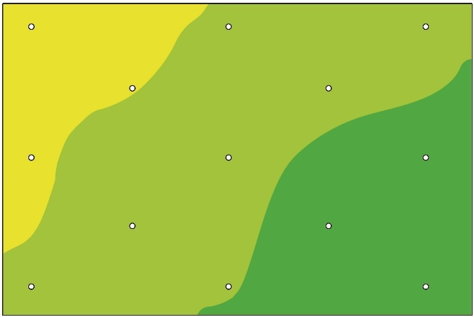
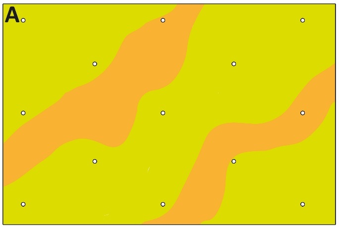 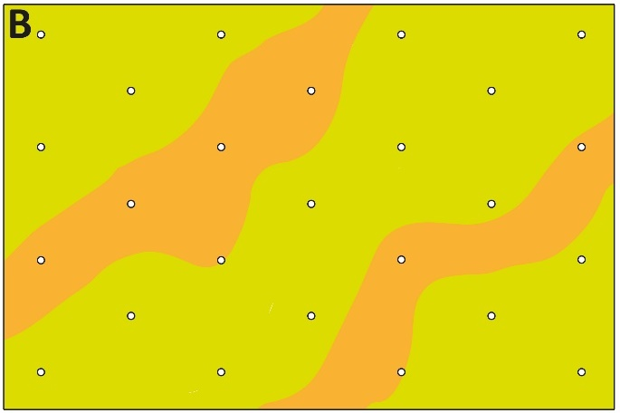
Je kan boringen en/of putten ook in een rij plaatsen om een transect van het landschap te bekomen. Dit is een goede manier om evoluties of overgangen in het landschap te onderzoeken. Een boortransect plaats je daarom steeds loodrecht op hellingen, valleien, enz. om de aanwezige landschappelijke variatie maximaal te vatten (fig. 3.20).
Je kan vertrekken met een vaste afstand tussen de boringen en/of putten. Indien hierdoor een overgang in het landschap onvoldoende getroffen wordt kan het echter nodig zijn om daar extra waarnemingen te doen, dus in de vorm van tussenliggende boringen of putten (fig. 3.21). In je planning voorzie je daarom best enkele extra, vrij in te zetten, boringen of putten.
Meerdere transecten naast elkaar vormen de facto een grid, en omgekeerd bevat elk grid meerdere boortransecten. Bij landschappelijk bodemonderzoek in een grid ben je je hiervan best bewust, en gebruik je de raaien van het grid om de meest relevante transecten van het landschap te bekomen. Je oriënteert de raaien bijvoorbeeld dwars op hellingen, valleien, enz. (fig. 3.22).
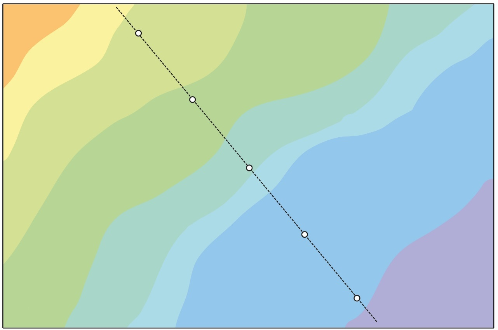
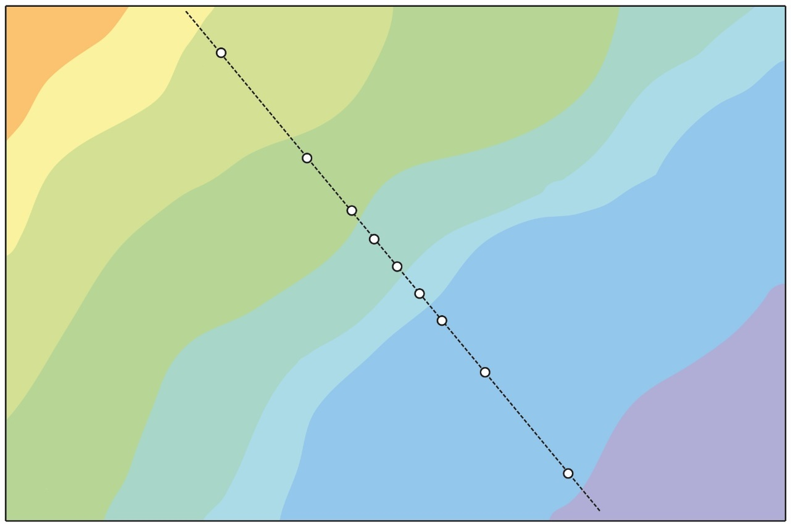
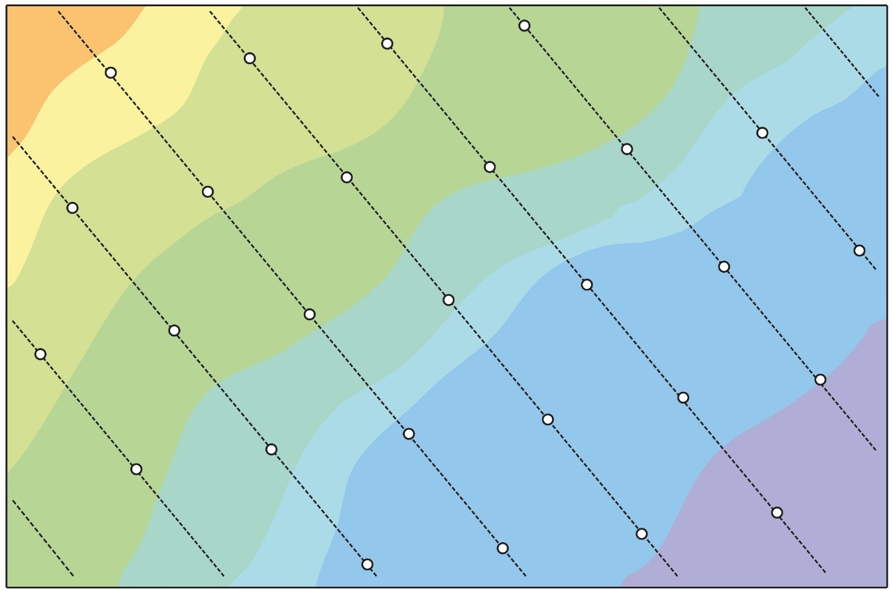
Door meerdere, bijvoorbeeld haaks op elkaar georiënteerde, transecten te combineren kan je het (paleo)landschap in 3D in kaart brengen. Geofysische sonderingen of vlakdekkende metingen (zie 3.2.3 en 3.2.4) kunnen hierbij aanvullend zijn, om zo een nagenoeg vlakdekkende interpretatie van de ondergrond toe te laten.
Ook wanneer je in een regelmatig grid werkt, kunnen overgangen in het landschap soms onvoldoende worden gevat. Soms heb je bijvoorbeeld een nauwkeurigere afbakening nodig van het voorkomen van een bepaalde laag, of van zones met goede of slechte bodembewaring, dan de resolutie van het grid toelaat. Dit kan je alleen bekomen door enkele extra tussenliggende boringen of putten te plaatsen (zie 3.4). Ook de resultaten van andere observaties, bijvoorbeeld structuren zichtbaar via geofysisch onderzoek, kunnen aanleiding geven tot het uitvoeren van extra boringen of profielputten.
Ook voor de rapportage van de resultaten kan je (boor)profielen samen presenteren als transecten. Dit is sterk aan te raden als je bepaalde evoluties of overgangen in het landschap wil illustreren.
3.3.2 Diepte
Je boort of graaft steeds diep genoeg om de niveaus te kunnen herkennen die mogelijk steentijdsites bevatten. Daarvoor moet je meestal ook de ondergrens van die niveaus kunnen waarnemen. Je graaft daarom met enige marge tot door het diepste relevante niveau.
Ook de impact van eventuele geplande ontwikkelingen is van belang. Bijvoorbeeld middenpaleolithische sites kunnen op grotere diepte aanwezig zijn. In het kader van diepe werken hou je daarom ook rekening met de mogelijke aanwezigheid van aardkundige eenheden die relevant kunnen zijn voor deze diepere steentijdarcheologie.
Vaak is er vooral een verwachting naar bewaring van sites in holocene bodems, waardoor landschappelijk onderzoek zich vaak uitsluitend hierop richt. Afgedekte laatglaciale bodems blijken echter veel ruimer voor te komen dan vaak wordt aangenomen, en dus ook daarin (uitstekend) bewaarde steentijdsites. Vaak bevinden deze zich niet veel dieper dan de holocene bodem. Het is daarom aan te raden om bij landschappelijk booronderzoek (occasioneel) wat dieper te kijken dan de holocene bodem, vooral in regio’s waar laatglaciale bodems al gekend zijn.
3.3.3 Natuurwetenschappelijk onderzoek
Er bestaan veel analyses die ons meer kunnen leren over de samenstelling, aard of ouderdom van aardkundige eenheden, en daarmee over het vroegere landschap en de evolutie ervan doorheen de tijd: fysico-chemische analyses van sedimenten en bodemhorizonten, absolute dateringmethoden en paleoecologisch onderzoek. Daarvoor kan je monsters nemen tijdens het landschappelijk boor- of profielputtenonderzoek.
Deze onderzoeken brengen natuurlijk steeds een zekere kost met zich mee. Je zet ze daarom alleen in om onderzoeksvragen te beantwoorden die relevant zijn voor het vooronderzoek naar archeologische sites.
Soms kunnen bepaalde onderzoeken relevant zijn indien een site aanwezig is, maar helpen ze niet bij de prospectie ernaar. In dat geval kan je die onderzoeken uitstellen tot wanneer de aanwezigheid van een site is vastgesteld: tot in de waarderingsfase of zelfs tot bij de opgraving. In het kader van preventief onderzoek zou het immers een overbodige kost vormen als er geen site aanwezig blijkt. Het kan echter opportuun zijn om de nodige monsters wel al tijdens het landschappelijk onderzoek te nemen, terwijl de kost daarvan beperkt kan blijven.
3.4 Interpretatie
In de eerste plaats moeten de resultaten van landschappelijk bodemonderzoek aangeven of archeologische prospectie zinvol is. Daarvoor moeten de drie basis-onderzoeksvragen van het landschappelijk onderzoek positief beantwoord zijn (zie 3.1). Het spreekt immers voor zich dat prospectie met archeologische boringen alleen zinvol is als er niveaus aanwezig zijn die steentijdsites kunnen bevatten, én als die niveaus voldoende goed bewaard zijn. Maar de aanwezigheid van een dergelijk goed bewaard niveau betekent nog niet dat het steentijdsites bevat. Bovendien zijn de beschikbare prospectietechnieken niet geschikt voor het opsporen van alle mogelijke types van steentijdsites (zie 2.3.2 en 4.2.2.3).
Het landschappelijk bodemonderzoek kan bovendien aangeven waar je best prospecteert, zowel in de verticale als horizontale zin.
In de eerste plaats toont het de stratigrafische positie van eventuele sites en de diepte en dikte van de niveaus waarin deze zich kunnen bevinden. Dat is belangrijk om je prospectiestrategie te bepalen. De resultaten van het landschappelijk bodemonderzoek moet je hiervoor wel met enige marge interpreteren. De dieptes en diktes van aardkundige eenheden kunnen soms sterk variëren over korte afstand, en je houdt er dus best rekening mee dat dit niet steeds volledig zichtbaar is in de resultaten van een landschappelijk bodemonderzoek. De gegevens van een landschappelijke boring of profielput geven immers alleen zekerheid over hun exacte locatie, en ze worden doorgaans in een grid met een veel lagere resolutie dan bij archeologisch booronderzoek geplaatst.
Landschappelijk bodemonderzoek laat ook toe om eventueel zones af te bakenen voor prospectie, op basis van de aanwezigheid en bewaringstoestand van niveaus die steentijdsites kunnen bevatten, en eventueel op basis van bepaalde landschapskenmerken zoals topografie of waterhuishouding. Ook hierbij kunnen boringen en profielputten alleen zekerheid bieden over hun exacte locatie. Daarom kan je de grens van een deelzone voor prospectie maar op één manier trekken: tot net voor de ‘negatieve’ boringen/putten (= de putten waarin geen voldoende goed bewaard niveau aanwezig is dat mogelijk steentijdsites kan bevatten). Je wil immers weten tot waar het relevante niveau aanwezig en/of goed bewaard kan zijn (fig. 3.23). Een begrenzing net achter de ‘positieve’ boringen/putten geeft alleen aan waar het relevante niveau zeker aanwezig en/of goed bewaard is (fig. 3.24: links). Een begrenzing halfweg tussen positieve en negatieve boringen is sowieso uit den boze, want dat is een louter theoretische interpolatie zonder werkelijkheidswaarde (fig. 3.24: rechts).
Je kan een afbakening alleen verfijnen door middel van aanvullende waarnemingen. Daarvoor kan je tussen de ‘positieve’ en ‘negatieve’ boringen/putten één of enkele extra boringen/putten plaatsen (fig. 3.25).
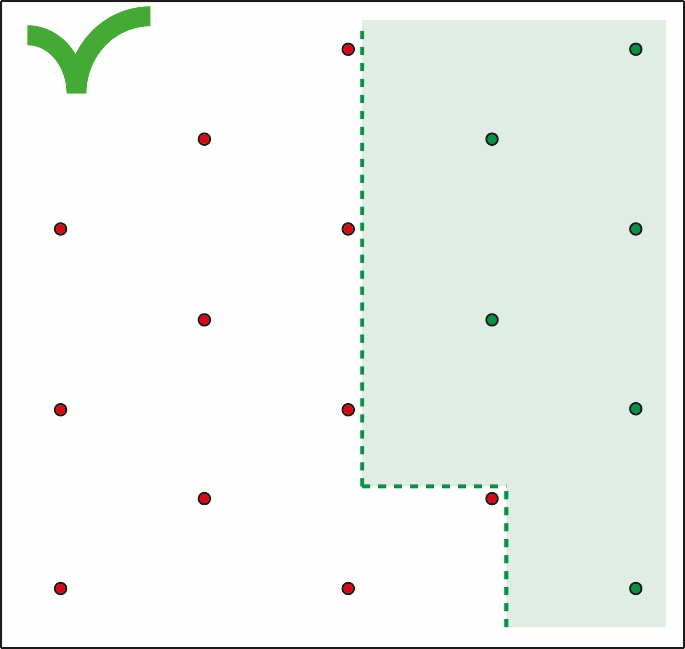
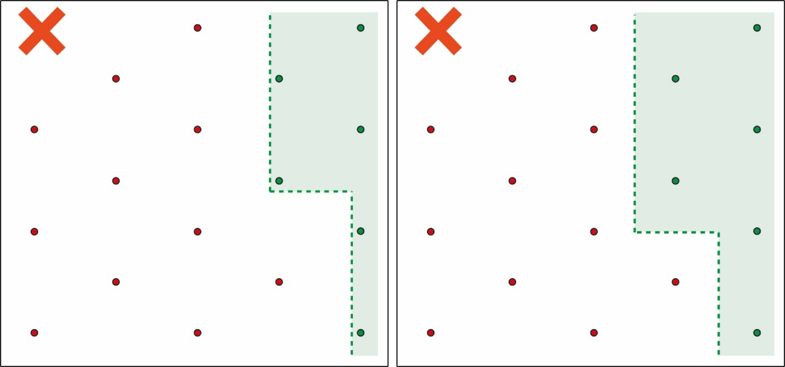
- Links worden de grens net achter de ‘positieve’ boringen of putten gelegd (groene stippen). Hiermee verlies je mogelijke oppervlakte tussen de ‘positieve’ en ‘negatieve’ waarnemingen waar goed bewaarde relevante niveaus wel aanwezig kunnen zijn.
- Rechts wordt de grens halfweg tussen de ‘positieve’ en ‘negatieve’ boringen of putten gelegd. Dit steunt echter niet op waarnemingen en is dus niet meer dan een gok.
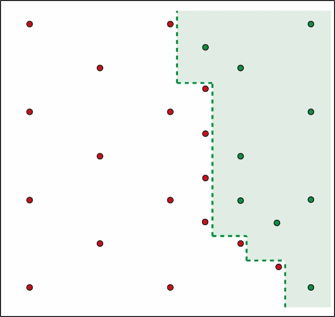
Afbakenen van deelzones is niet in elk onderzoeksgebied mogelijk. Vaak is het terrein eerder homogeen en zijn de relevante niveaus over het hele terrein aanwezig en even goed bewaard. Omgekeerd kunnen de bodembewaring en/of geomorfologische opbouw soms zo sterk variëren op korte afstand dat het relatief brede grid van landschappelijk bodemonderzoek niet volstaat om dit voldoende duidelijk in kaart te brengen. In dat geval maak je best de afweging om het hele terrein wel of niet te prospecteren op basis van de gemiddelde bodembewaring (fig. 3.26).
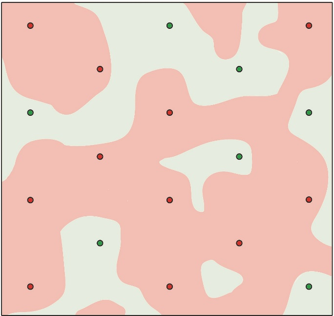
Mikkelsen et al. in voorbereiding.↩︎
Naar Hissel & Van Londen 2004 en Verhegge et al. 2016.↩︎
De Code voor Goede Praktijk schrijft een minimale boordiameter van 7 cm voor.↩︎
De Code voor Goede Praktijk schrijft een minimale gutsdiameter van 3 cm voor.↩︎
O.a. de Code van goede praktijk voor boringen en voor exploiteren en afsluiten van boorputten voor grondwaterwinning: https://navigator.emis.vito.be/mijn-navigator?woId=76834.↩︎
Soms moet rekening worden gehouden met compressie, vooral bij steekboringen.↩︎
Meylemans et al. 2021; foto: Kris Vandevorst, agentschap Onroerend Erfgoed.↩︎
Missiaen et al. 2017.↩︎
Verhegge et al. 2020.↩︎
Bijv. De Smedt et al. 2013a & b; Meylemans et al. 2011.↩︎
Verhegge et al. 2016.↩︎
Bijv. Chapman et al. 2009; Schneider et al. 2017.↩︎